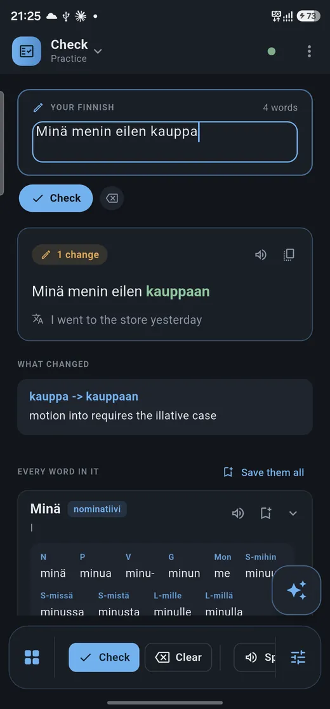
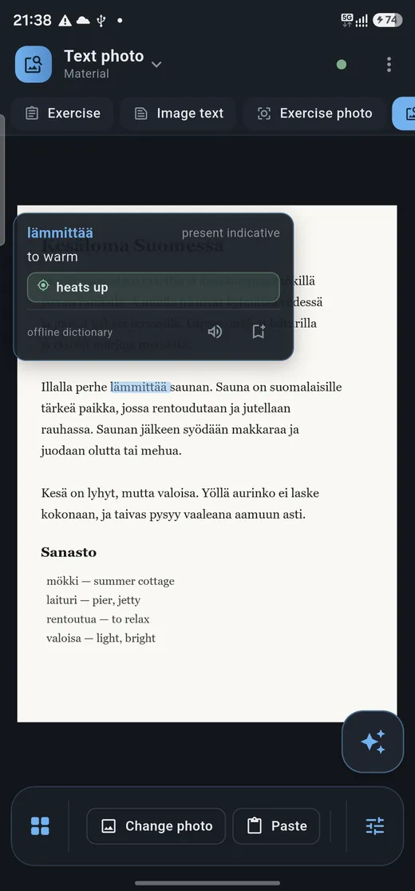
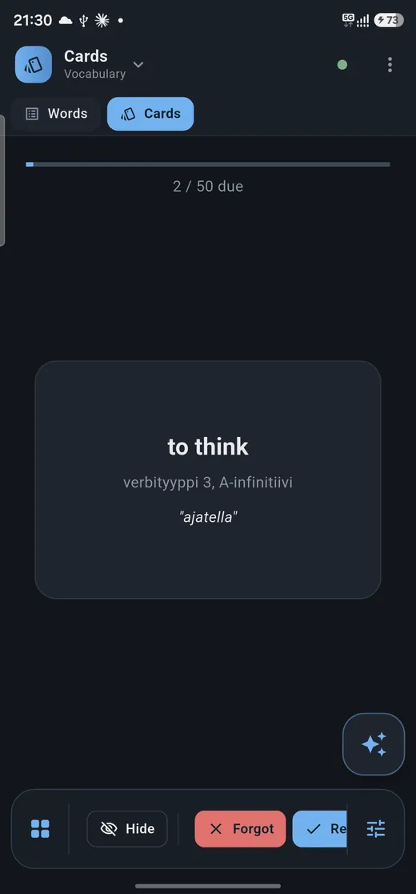
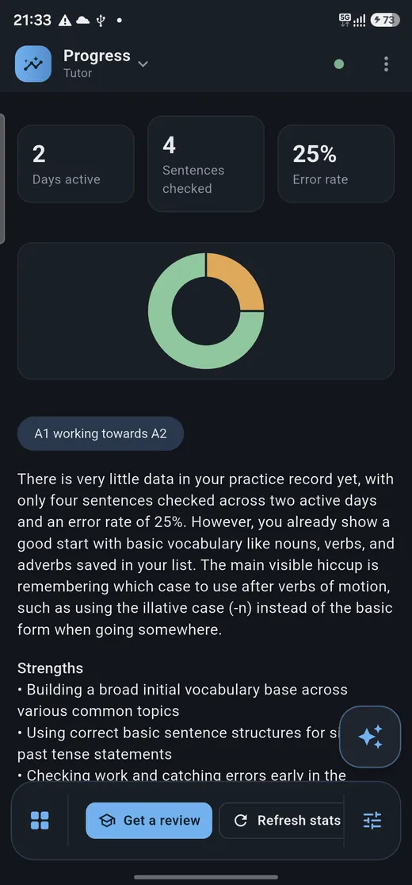

Finnish tutor
A tutor that tells you why you were wrong.
Write a sentence and every change comes back marked, with the rule behind it in plain English. Photograph a page to tap any word in it. Nothing you learn slips away.
Free · Android and Windows · Closed beta on Google Play




Built for the way people actually study
Corrections you can learn from
Every change marked, the reason given — “motion into takes the illative” — and the case tables underneath.
Any page, tappable
Text recognition runs on the device, so every word in a photographed page opens its dictionary entry.
Speech, transcribed
Record yourself and read back what you said. On Android it never leaves the phone.
Your course book
Import a PDF, turn pages, write on them with a pen, and work through the exercises a page sets.
Words that stay
Save from anywhere into one list with the forms filled in. Review as cards, export as CSV.
A syllabus from your mistakes
Each correction becomes a topic, so the grammar you keep missing is the grammar you get next.
Four steps cover most of it
Scroll and the phone follows along, or tap a step to jump to it.
Write a sentence
Every change is marked, with the rule behind it in plain English — down to which case or verb form applies.
Photograph a page
The text is read on the device, and every word on it becomes a tap target with its own entry.
Review what you saved
Anything you tap or save becomes a card, spaced so it comes back just before you'd forget it.
See where you stand
Your level, what's solid, and the topics your own mistakes keep pointing at.
Check
What stays, and what doesn't
Pick anything Finnish tutor handles.
Bring your own AI key
The AI features aren't a service I run for you. You make your own free Gemini key and paste it into Settings, and the app calls Google directly from your device, as you. The key sits in the app's own settings storage and never reaches me. Your use of the API is between you and Google.
Works without a key offline
If you never add one, the offline half keeps working: 174,932 bundled headwords, tap-a-word lookup, word forms, your saved list, the review cards, the PDF reader, text recognition and speech-to-text.
Camera pages & exercises
Opens only when you start it: photographing a page or an exercise, or scanning the pairing QR code from the desktop app. Recognition runs locally first, so where the device can read the text itself, the text is sent rather than the picture. Photos aren't uploaded anywhere else or added to any gallery.
Microphone local by default
Used only while you're recording, after you press record. Transcription runs on the device by default — Whisper through sherpa-onnx on Android, faster-whisper on Windows — and your audio stays there. Sending audio to Gemini is a fallback for when local transcription is off or unavailable.
Google sign-in optional · drive.file
Optional, and there for one thing: syncing your word list through your own Drive with the
narrow drive.file scope, which reaches nothing but the files the app created.
No feature is locked behind signing in.
What it doesn't do
- No ads, no analytics, no trackers, no crash reporting.
- No accounts, no back end, no server of mine.
- Your sentences, recordings, photos and word list never reach me.
- Nothing is sent in the background. A request happens when you press a button.
The privacy policy goes feature by feature and says exactly what is and isn't sent to Gemini.
Platforms
- Android
- On Google Play as Finnish tutor (
com.ahmedyosri.finnish_tutor). In closed testing — join the test to install it. - Windows
- Desktop build, with one-scan QR pairing to carry your settings across from the phone.
- Offline
- 174,932 bundled headwords, on-device text recognition and on-device speech-to-text.
- Price
- Free. The AI features run on your own free Gemini key.
Join the test
Become a tester Closed beta
Finnish tutor is in closed testing, so Play only shows it to accounts that joined the tester group. Two steps, once, with the Google account your phone uses.
-
1
Join the tester group
Open to anyone, no approval or waiting. Press Join group on the page that opens.
Join the tester group → Rather not leave a page open? Send a blank email to finnish-tutor+subscribe@googlegroups.com and you're joined by reply. -
2
Accept the invitation
Sign in with the same account and press Become a tester.
Become a tester → - 3
If Play says the app isn't available, the account on your phone usually isn't the one that joined the group. The AI features also need your own free Gemini key, added in Settings. Google Play is a trademark of Google LLC.